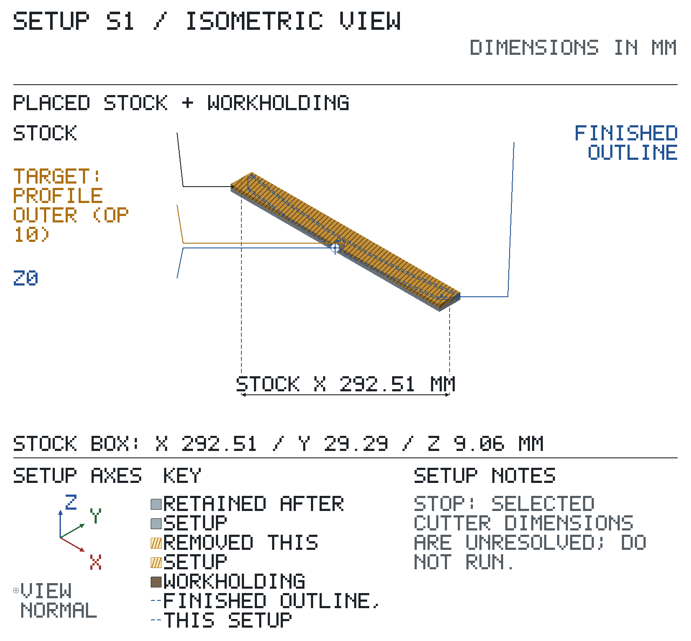

Header / route
No reported errors, warnings or unresolved checks for this section.
? Drawing revision is not confirmed.
Drawing material / finish:
form: finished test solid; note: The STEP solid is the stock; only the +Z strap face is cut. No material is asserted.; as is faces: #20/ADVANCED FACE[1]/HAF STRAP FACES P01 / #49/ADVANCED FACE[2]/HAF ROD HOLE P01 / #163/ADVANCED FACE[3]/HAF TOP EDGE P01 / #166/ADVANCED FACE[4]/HAF HUB OD P01 / #233/ADVANCED FACE[5]/HAF PIVOT BORE P01 / #248/ADVANCED FACE[6]/HAF TIP LAND POS X P01 / #343/ADVANCED FACE[7]/HAF ROD HOLE P01 / #382/ADVANCED FACE[8]/HAF PIVOT BORE P01 / #426/ADVANCED FACE[9]/HAF PROFILE OUTER P02 / #431/ADVANCED FACE[10]/HAF TIP LAND NEG X P01 / #448/ADVANCED FACE[11]/HAF HUB FACES P02 / #486/ADVANCED FACE[12]/HAF HUB OD P01 / #495/ADVANCED FACE[14]/HAF HUB OD P02 / #505/ADVANCED FACE[15]/HAF PROFILE OUTER P03 / #514/ADVANCED FACE[16]/HAF HUB OD P02 / #532/ADVANCED FACE[17]/HAF PROFILE OUTER P01 / #553/ADVANCED FACE[18]/HAF HUB FACES P01
| setup | starts from | machine / fixture |
|---|---|---|
| S1 | stock | test-mill / vise |
| feature | requirement / acceptance band |
|---|---|
| strap datum b | No drawing requirements declared. |
| strap faces | No drawing requirements declared. |
| hub faces | No drawing requirements declared. |
| hub od | No drawing requirements declared. |
| pivot bore | No drawing requirements declared. |
| rod hole | No drawing requirements declared. |
| top edge | No drawing requirements declared. |
| profile outer | No drawing requirements declared. |
| tip land pos x | No drawing requirements declared. |
| tip land neg x | No drawing requirements declared. |
Kernel geometry findings use sampled tool / holder solids, not CAM toolpaths. An unresolved fixture is not a rendered holding proof. ? = unresolved. EM = endmill; CD = centre drill; DTI = test indicator; mic = micrometer. Keep the drawing at the bench.
Sign off: __________ First article / measured results: ____________________
prechips 0.1 · report ad741a9f
✗ S1:10: selected cutter or holder is certainly occluded by part/fixture material.
? Geometry unresolved: coordinates / frame binding; headroom / clearance. Close ? checks below.
? Tooling unresolved: RPM / feed. Close ? checks below.
? DRO / inspection unresolved: DRO / tool / trial-cut checks. Close ? checks below.
Starts from: stock; stock state: top feature: profile outer; top z: 8; bottom z: -21.2946
Hold: fixture: vise; jaws along: x; fixed jaw: rear; parallels: parallels; grip on: hub faces; stop: rod-end tip against the fixed-jaw stop; clamp: hand snug, then quarter turn; grip mm: 6; jaw above supports mm: 26; jaw center along mm: 0; parallels centres mm: -75 / 0 / 75 / 0

Coolant: none; deburr maximum: 0 mm
Headroom / clearance — nominal, subject to verification. Stack (mm): bed ?; blocks 0; parallels 20; supported stock 29.2946; insertion 25; required ? / spindle capacity ?. Tools: projection 38, OAL 63, holder length 60, headroom ? mm. Jaw top Z -1.29464; stock top 9.29464 mm above jaws. Envelope (mm): X stock ?, fixture ?, required ? / travel ?; Y stock ?, fixture ?, required ? / travel ?.
Arm on its tips on 20 mm parallels, pivot axis horizontal across the jaws; jaws along X close across frame Y onto the hub faces (width 7.0565). Jaw tops 26 mm above the parallels: z = 4.705, 3.295 mm below the outer-arc apex. The parallel pair lies end to end along the jaws under both tips.
Direction (§6.2): . ABS Axis Set (§7.4), never Preset (§8.1). Jog without retouch; mirrored = STOP, correct Direction and redo touch / set / check.
| axis | touch / compensation | Axis Set | jog, no touch | must read | mirrored: STOP |
|---|
? No resolved feature coordinates; use the explicit operation targets only where their local provenance is stated.
Feature points, not cutting tips; use Z tips in operations. → = towards. Measured binding: ?.
| op | do | feature | tool / holder | rpm | feed | Z tip | dir | inspection |
|---|---|---|---|---|---|---|---|---|
| 10 | finish face | strap datum b | 8 mm EM / R8 collet | ? | ? | ? tip endpoint | conv | — |
10: Side-mill the +Z strap face (datum B, frame +Y side, the rear-jaw side) with the cutter axis vertical.
RPM / feed source: approved plan starting-speed model; machine range; cutting-data source row
Sign off: __________ First article / measured results: ____________________
prechips 0.1 · report ad741a9f